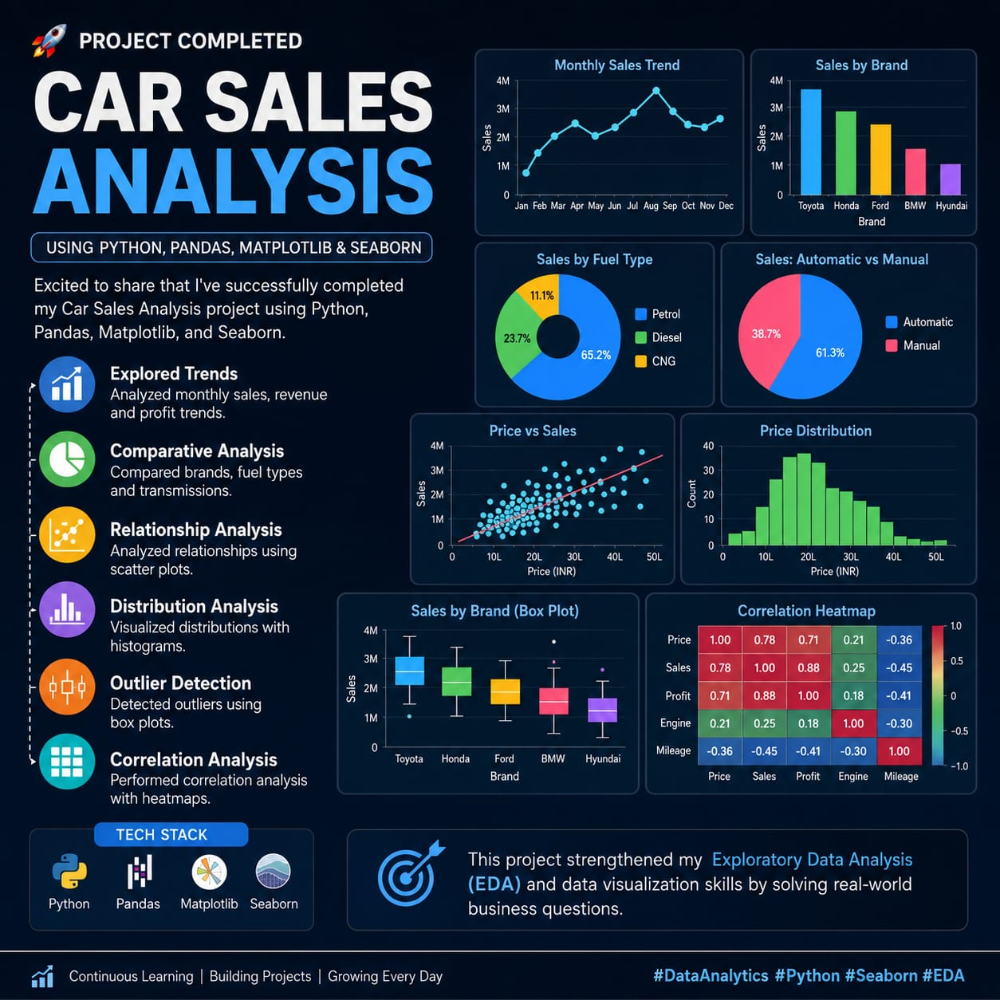

01

CAR SALES ANALYSIS
Python · Pandas · Matplotlib · Seaborn
Car Sales Analysis
Analyzed sales and revenue trends across brands, fuel types and transmission categories to understand vehicle performance and identify important patterns.
- Compared sales across vehicle segments.
- Identified high- and low-performing categories.
- Created scatter plots and box plots.
- Studied correlations, distributions and outliers.
Used exploratory analysis to compare vehicle performance and understand category-level differences in the dataset.